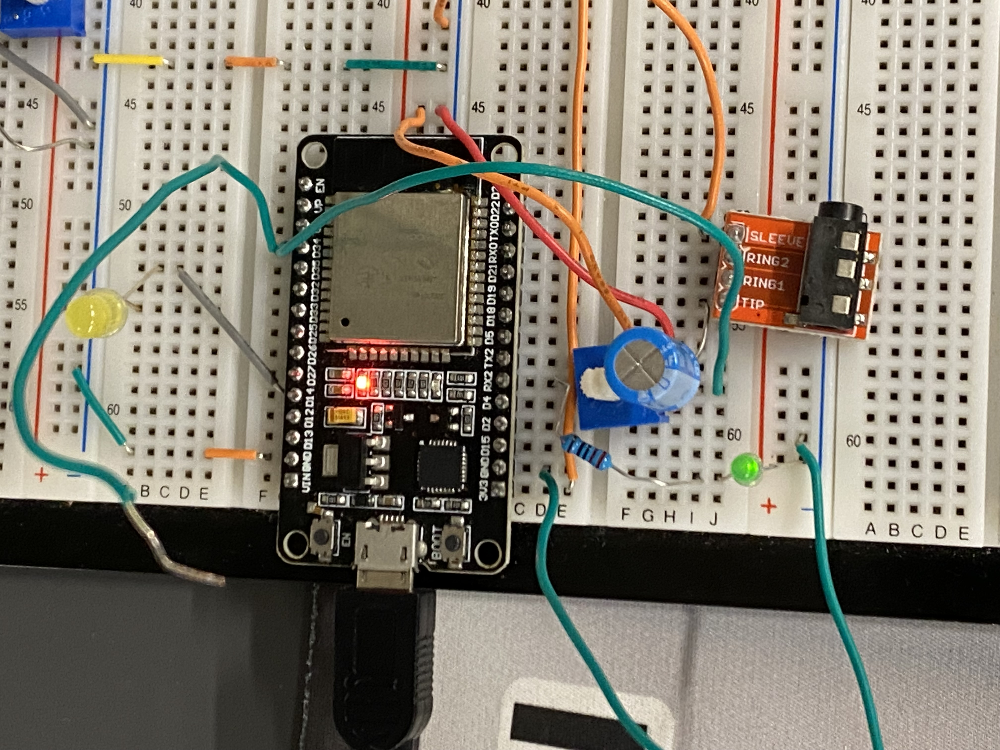
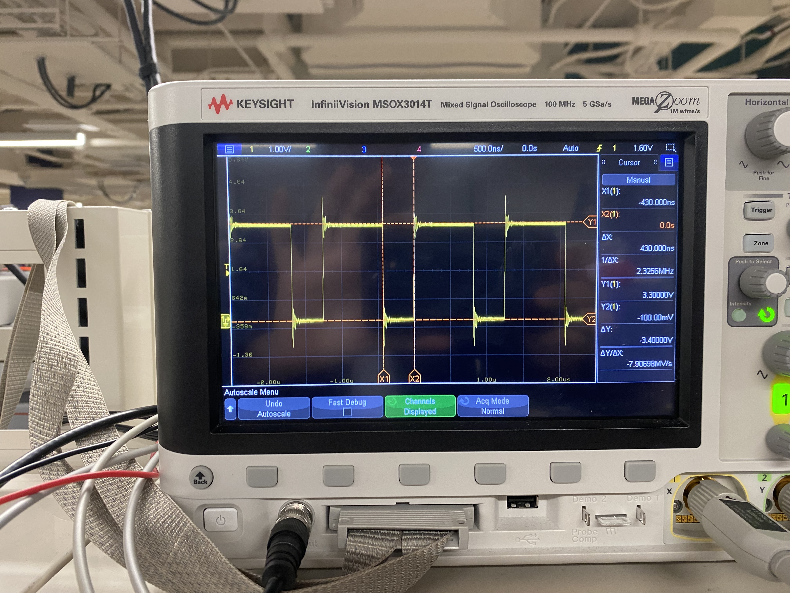
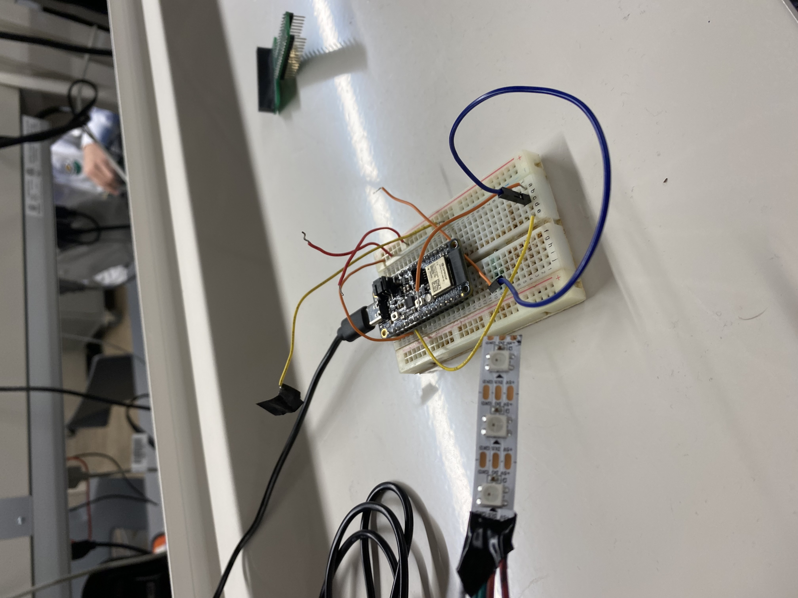

Progress Report for Anurag Numboori
Weeks 1-2:
Date: 1/20/23Total hours: 13
Description of project design efforts:
This week was mostly spent researching, fleshing out the design, and getting hardware to prototype with. First thing I did was get the website hosted and customized for our team. I then reached out to some friends and procured addressable LED strips for prototyping. Worked with the team to figure out how to bias the strip for different colors. The ones I was able to get had 4 pins: one each for RGB and 1 for 12V. This proved useful for testing but unusable for the final design. I kept looking for hardware we could use for prototyping (microphone, TRRS jack) and worked with Graeme to test out our microphone without amplification. Our initial tests were inconclusive as we didn't have the necessary amplification. I was not present for the construction of the amplifier circuit. I then got the prototyping environment set up on my laptop and worked with Graeme to test the ESP32's onboard ADC with signals from the AD2. There was some friction with the IDE as both of us have never used PlatformIO and had to troubleshoot out a few bugs before we could read serial communcation (so we could see the ADC readings). The AD2 input signals represented a hypothetical input audio wave. I am in the middle of creating a data visualization tool to see how accurate our sampling with the onboard ADC is, but I expect to finish it next week. This tool will tell us if we need to depend on a seperate module for the ADC or we can use the onboard ADC. Spent some time with the other members thinking about how to consolidate the final functionality and we settled on the 3 Modes switching from external controls. I did some research into the FFT algorithm that we will need to start working with after we have audio input from the ADC. I also did some research on how diodes work to see how useful a Zener Diode will be for stepping power down and to brush up on general operations for driving the LEDs. Finally, worked with the team to finish up documentation required for the course. Note: I forgot to take photos this week but I will try to have many for the next weeks.
Week 3:
Date: -Enter today's date here (the date you posted)-Total hours: 7
Description of project design efforts:
Tried getting bluetooth basic connection working. Got it working. Worked out the duty cycle for DATA control for LEDs. Worked with PWM outputs to build duty cycle on protype circuit. On Thursday, I got duty cycles working from PWN outputs. This allows us to build 0 and 1 inputs to our data pin on the LED. On friday, I built some control flows for the 0,1 duty cycle inputs to our data pin. We also got the LED strip in the mail. I tried testing the inputs but could not get anything productive to work. I accidentally destroyed 3 LEDs but thankfully I had disconnected them from the rest of the strip so everything else is fine. The team was able to use a library for changing the colors of the LEDs, so we will probably not use the duty cycle with PWM for the data pin. Worked on documents with the team.   